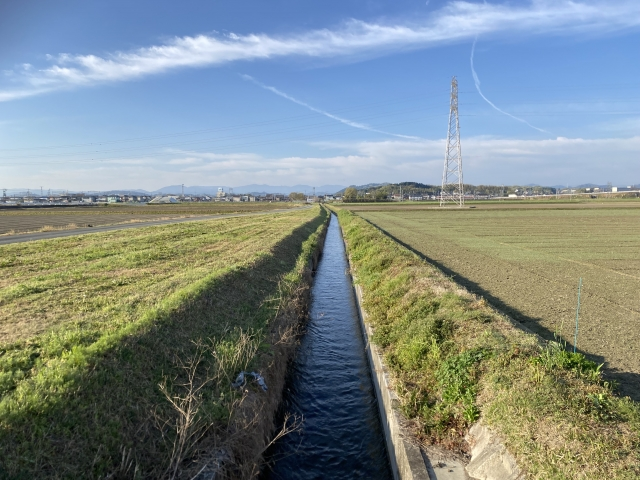
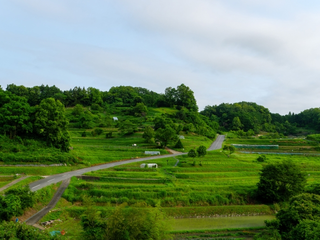

江戸時代の理性的な新田開発
東海道新田は、江戸時代の新田開発の流れの中で、計画的に造成された地域です。幾何学的に割られた土地、引かれた水路、直線の道路――すべてが人為的に設計されました。農業地から産業地への転換、そして現在のまち。東海道新田の歩みから見える、日本の地域形成の歴史をたどります。

「東海道新田」という地名は、東海道沿いに開発された新たな田地を意味すると考えられる。江戸時代、日本全体で人口が増加し、食糧需要が高まる中で、幕府は組織的に新田開発を奨励しました。東海道新田の造成は、こうした政策の産物であり、単なる自然発生的な農業地ではなく、政治的・経済的な意図をもって計画された事業だったと見られます。
そもそも江戸時代の新田開発は、戦乱の世が終わって治安が安定し、各地で人口が増え、耕地への需要が高まったことを背景にしている。年貢を石高（こくだか）で取り立てる幕藩体制のもとでは、新たに田を増やすことが、そのまま領主の収入の増加に直結した。そのため幕府も諸藩も、河原や低湿地、原野を切り拓く事業をしばしば奨励し、開発を願い出る村や有力者を後押ししたのである。開かれた田は検地によって石高を打ち出され、その分だけ村の「公式の大きさ」と年貢負担が積み増されていった。「新田」という二文字には、こうした近世の土地制度のしくみがそのまま刻まれている。
土地は方眼状に割られ、精密に測量されました。水路は計算された勾配で引かれ、農民の入植を前提とした村落構造が予め設計されていました。直線的な道路、規則的な枡形の田畑――これらすべてが、江戸時代の理性的な土地利用計画の証拠です。新田の村は、古くからの「本村（ほんむら）」のはずれや川沿いに、いわば計画的な分村として営まれることが多く、そこには既存の集落とは異なる、はじめから設計された土地の秩序があらわれることがある。豊田の地に残る「新田」の地名は、そうした近世の開発の最前線であったことを、数百年の時を越えて伝えていると言えよう。
この地域の古絵図を見ると、現代のまち並みの背景にある計画性がはっきりと見えます。区画整理された土地は、農民たちの生産性を高め、領主にもたらされる年貢の増加につながりました。新田開発は、単なる農地の拡大ではなく、領主権力を強化する戦略的な事業だったのです。なお、磐田周辺には「寺谷新田」「源平新田」「太郎馬新田」のように、本村の名や開発を主導した人物の名を冠した「○○新田」の地名が点在しており、東海道新田もまた、こうした遠江一帯に広がる新田開発の流れの中に位置づけて読むことができる。
東海道新田の名にある「東海道」は、江戸と京とを結んだ天下の街道のことである。豊田の地は、東海道五十三次の28番目の宿場・見付宿（現在の磐田市見付付近）と、29番目の浜松宿との、ちょうど間にあたる。両宿の間には天竜川が横たわり、旅人は「池田の渡し」で舟に乗って川を越えた。池田の渡しは天竜川の左岸――すなわち磐田側――に置かれており、豊田一帯は、まさに東海道と天竜川という二つの大動脈が交わる場所に広がっていたのである。
地形の上で見ると、この一帯は天竜川の左岸に開けた低地である。天竜川はたびたび流路を変え、洪水を繰り返す暴れ川として知られた一方で、その氾濫がもたらした肥えた土と豊かな水は、ひとたび治められれば新田開発の絶好の舞台ともなった。街道沿いという立地は、人や物資の往来を呼び込み、開かれた田の産物を運び出す道ともなる。東海道新田が「東海道沿いの新田」として営まれた背景には、こうした街道と河川がもたらす地の利があったと考えられる。
もっとも、天竜川左岸の低地を実り豊かな田に変えるには、まず水を治める必要があった。この地域の米づくりを古くから支えてきたのが、寺谷用水（てらだにようすい）である。寺谷用水は、天正16年（1588）ごろ、遠江を治めた徳川家康のもとで、代官・平野重定（ひらの しげさだ）らが天竜川左岸の寺谷に取入口を設け、堤防の築造と一体で開いたと伝えられる用水で、磐田の平野一帯の田を潤してきた。河川の治水と灌漑を兼ねたこの仕組みは、当時として画期的なもので、近年「世界かんがい施設遺産」にも登録されている。東海道新田を含む豊田の新田群もまた、こうして整えられた水の恵みの上に成り立っていたのである。

江戸時代を通じて、東海道新田は一貫して農業地域として発展してきました。適切に管理された水路、良好な土壌、安定した年貢制度――これらが農業生産を支え、地域の繁栄をもたらしていました。寺谷用水によって引かれた水は田を潤し、街道沿いという立地は産物の流通を助け、村は本村と新田とがゆるやかにつながりながら、米づくりを軸とする暮らしを営んでいたと考えられます。しかし、明治時代の産業革命により、すべてが急速に変わります。
鉄道の敷設は、この地域に劇的な変化をもたらしました。東海道本線の通過により、農業地は一変して産業地へと転換されていきます。工場の立地、商業機能の集中、労働人口の集中――計画された農業地は、新しい産業地域へと生まれ変わったのです。かつて旅人が舟で渡った天竜川には橋が架かり、徒歩や舟に頼っていた人や物の流れは、線路と車輪の上を走るようになった。街道と渡し場を軸に成り立っていた土地の秩序は、近代の交通網の中で大きく組み替えられていったのである。
その過程で、元々の土地割りは部分的に破壊されました。新しい都市機能に対応するため、道路は拡幅され、建物は近代的な構造に改変されました。しかし、完全には消えず、古地図と現代の地図を重ねると、江戸時代の計画性が今も息づいていることに気づきます。
現在、東海道新田の跡地には、工業地帯や住宅地が広がっています。しかし、南北に走る直線の道路、東西に並ぶ水路など、江戸時代の計画的な地割りの名残は、都市構造の中に確かに存在しているのです。これらは、地域の深い歴史を今に伝える貴重な証拠なのです。地名に残る「新田」の二文字、街道筋の名残、用水のすじ――こうした手がかりをたどると、何気ないまち並みの下に、江戸の開発から近代の産業化へと続く幾層もの時間が積み重なっていることに気づかされる。土地の履歴を読み解く鍵は、いまも私たちの足もとに残されているのである。